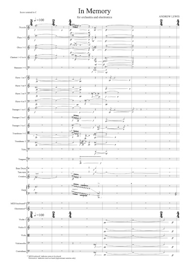
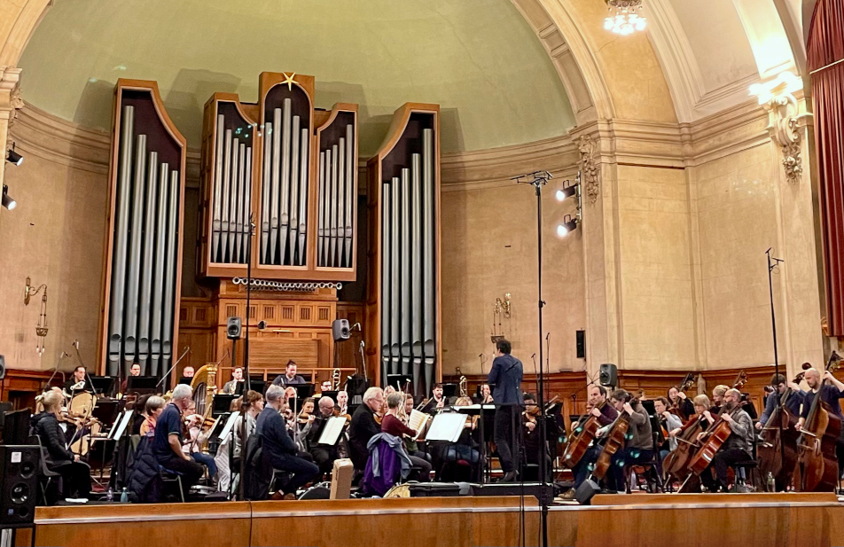

Date of composition: 2021
Duration: c. 9 min
Format: Orchestra (3.2.2.2 / 4.3.3.1 / timp. 2 perc. hp. kbd. / strings / electronics)
Premiere: 11 November 2022, Bangor, Wales (UK)
BBC National Orchestra of Wales/Gergely
Madaras
Prichard Jones Hall, Bangor University
First broadcast: 'Radio 3 in Concert', BBC Radio 3, 15 November 2022: BBC National Orchestra of Wales/Gergely Madaras
Excerpt
Score: available from Composers' Edition 
Materials for electronics: download
here

Programme note:
(download as PDF)
In Memory is a reflection on life with dementia, and especially the experience of unpaid family carers. Extracts from recorded conversations with family carers are woven into the fabric of the piece, forming its melodies, harmonies and rhythms.
The title In Memory carries different meanings: it is the sense of identity that resides in memory, and a memorial that marks its loss; memories of the person as they were, and more recent memories of the challenges the caring role now brings; it is a plea to remember the millions of family carers whose work often goes unrecognised, and a call for greater recognition and support. Finally, the piece is offered in memory of those who have been lost to dementia, and as a celebration of what remains when all else is forgotten.
In Memory was commissioned by the BBC and Bangor University as part of Cerddoriaeth 100 / Music 100, with financial support from Tŷ Cerdd. I am grateful to Joanna Griffiths, Sue Last and Mary Mitchell for generously sharing their thoughts and experiences; and to my wife Jennie, whose inspirational life as a carer and whose musical ear helped to make In Memory a better piece.